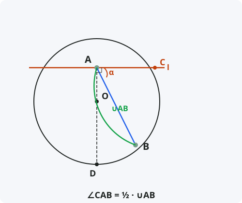

Угол между касательной и хордой
Формулировка
Угол между касательной и хордой, проведённой через точку касания, равен половине дуги, заключённой внутри этого угла.
Обозначения
Пусть дана окружность с центром O.
Прямая l — касательная к окружности в точке A.
AB — хорда, проведённая из точки касания A в точку B на окружности.
∠CAB — угол между касательной l (точка C лежит на касательной) и хордой AB.
∪AB — дуга, заключённая внутри угла (не содержащая точку касания с другой стороны).
Тогда: ∠CAB = ½ · ∪AB

Доказательство
Теорема доказана.
Следствия из теоремы
- Угол между касательной и хордой равен вписанному углу, опирающемуся на ту же дугу (с вершиной на окружности по другую сторону от хорды).
- Если хорда является диаметром, угол между касательной и хордой равен 90°.
- Угол между двумя касательными, проведёнными из одной точки, равен полуразности дуг, заключённых между точками касания.
- Теорема позволяет находить величины углов, связанных с касательной, не проводя дополнительных построений.
Примеры применения
Пример 1. Касательная и хорда образуют угол 35°. Найдите дугу, заключённую внутри угла.
Решение: ∠CAB = ½·∪AB ⇒ ∪AB = 2·35° = 70°.
Пример 2. Дуга между касательной и хордой равна 100°. Найдите угол между ними.
Решение: ∠CAB = ½·100° = 50°.
Пример 3. Хорда AB стягивает дугу 120°. Касательная в точке A образует с хордой угол. Найдите его.
Решение: Угол равен половине дуги: 120° / 2 = 60°.
Историческая справка
Теорема об угле между касательной и хордой была известна ещё древнегреческим математикам. Евклид в «Началах» (Книга III, Предложение 32) формулирует и доказывает эту теорему.
Евклид доказывает, что угол между касательной и хордой равен углу в противоположном сегменте круга (вписанному углу, опирающемуся на ту же дугу).
Эта теорема широко использовалась в астрономии для расчёта углов между направлением на звезду и горизонтом.
Интересные факты
- Теорема об угле между касательной и хордой — частный случай предельного перехода, когда секущая превращается в касательную.
- В навигации угол между касательной к горизонту и направлением на звезду используется для определения местоположения.
- С помощью этой теоремы можно доказать, что угол между двумя касательными равен полуразности дуг.
- В оптике угол между касательной к линзе и падающим лучом связан с преломлением света.
- Теорема Эвклида об угле между касательной и хордой — одна из самых часто используемых в задачах на окружность.